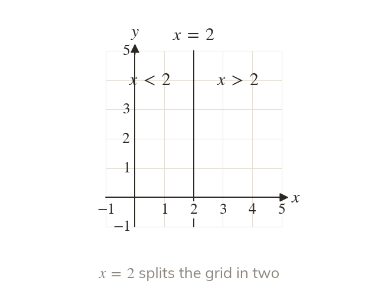
A line splits the grid in two
The line splits the grid in two. The region is every point to its right.
The line splits the grid into two regions. The inequality is every point to the right of it, not just the points on the line.
On a number line an inequality is a stretch of the line. On a coordinate grid it becomes a whole region, and two or three inequalities together pin down exactly the points that satisfy them all.
Work down the page at your own pace. Write every answer in your book first, then click to check it.
Read each card, then follow the worked examples one step at a time.

The line splits the grid in two. The region is every point to its right.
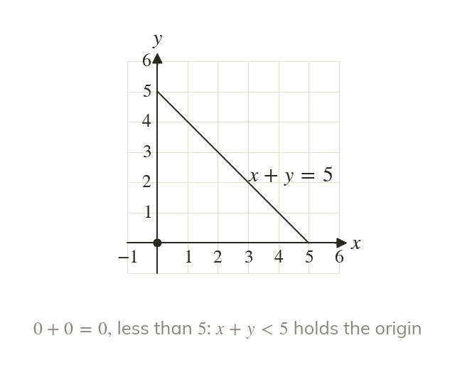
A point is in a region exactly when its coordinates make the inequality true. Substituting is the quickest test.
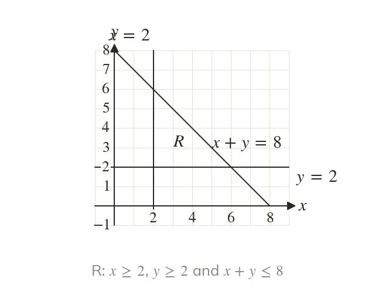
Two or three inequalities together describe the region where every one of them is true. That region is usually labelled R.
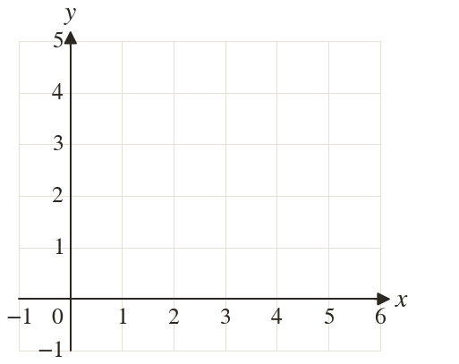
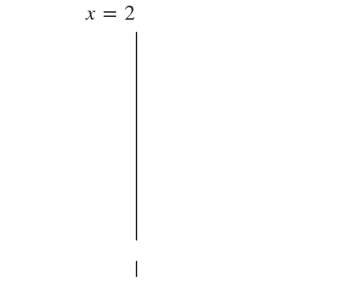
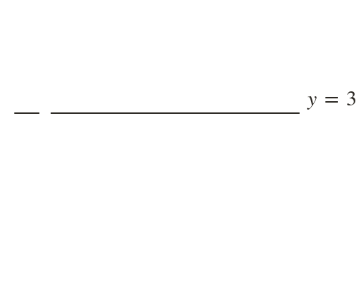
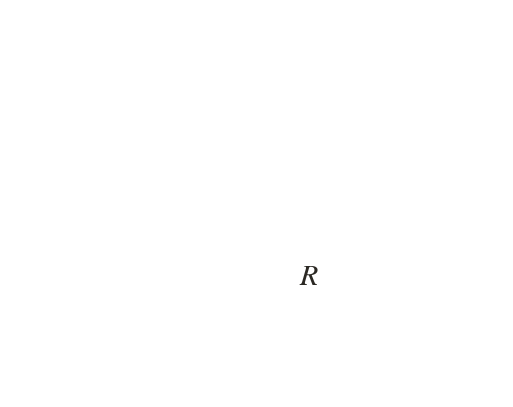
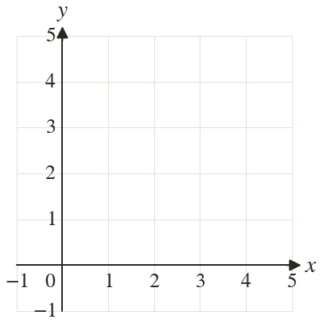
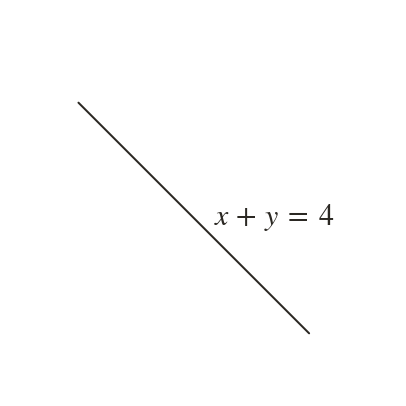
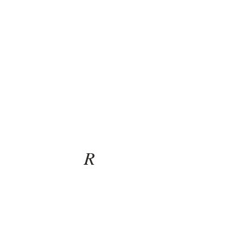
Pick an answer. If it's wrong, the feedback tells you which mistake it was.
Printable worksheet — the questions with room to work.
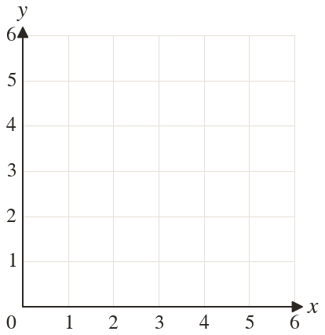
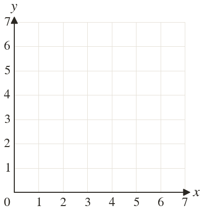
Read each card, then follow the worked examples one step at a time.
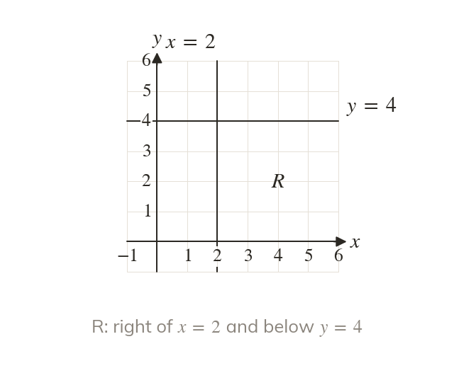
A region is described by naming each line round its edge. Each boundary line gives one inequality.
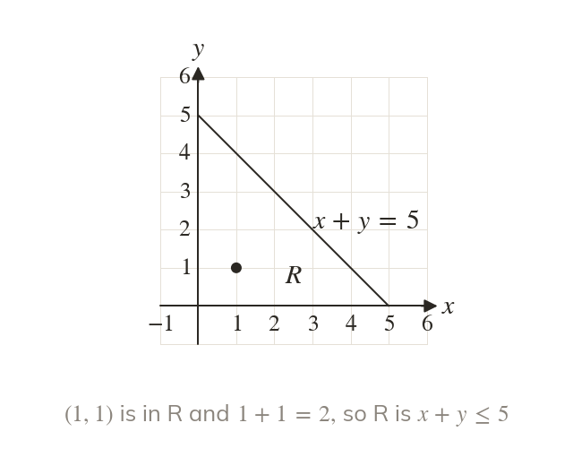
Above or right of a line is greater than; below or left is less than. For a sloping line, test a point inside R.
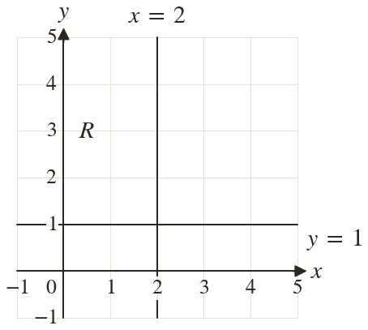
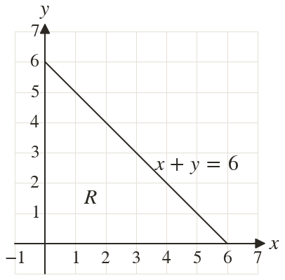
Pick an answer. If it's wrong, the feedback tells you which mistake it was.
Printable worksheet — the questions with room to work.
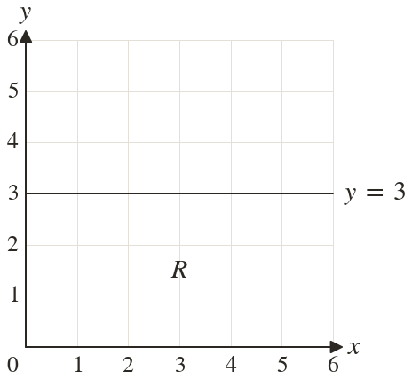
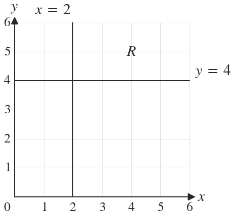
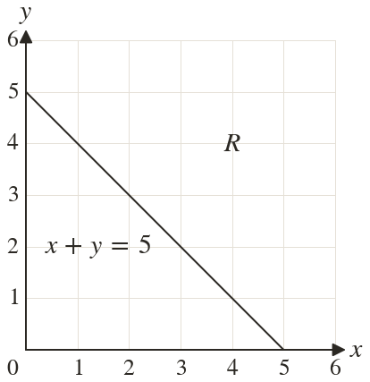
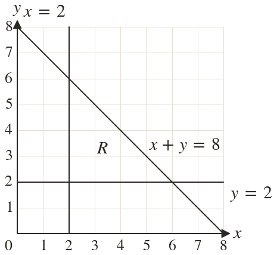
Finished? Next lesson: 10.21.1 Direct Proportion and Unit Value.
Log in, then search for a code to practise that skill.
Videos, worksheets and more on each part of this lesson.